Pinned
Intro
I build open source tools for World of Warcraft, streaming, reality capture and the Mac, most of them with AI in the loop.
Everything is on one page, laid out like an item shop: rarity colours, tooltips and all.
willhsu.dev
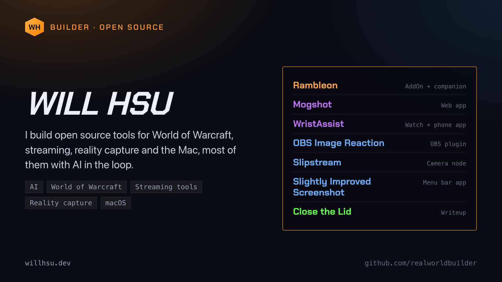
Projects
One post per project.
Rambleon
Rambleon is an adventure journal for Azeroth.
A passive WoW AddOn and a Mac companion turn a night of play into a timeline, a story page and an AI-written chapter.
Log out, and the night writes itself up.
A memory layer, not a meter.
https://github.com/realworldbuilder/rambleon
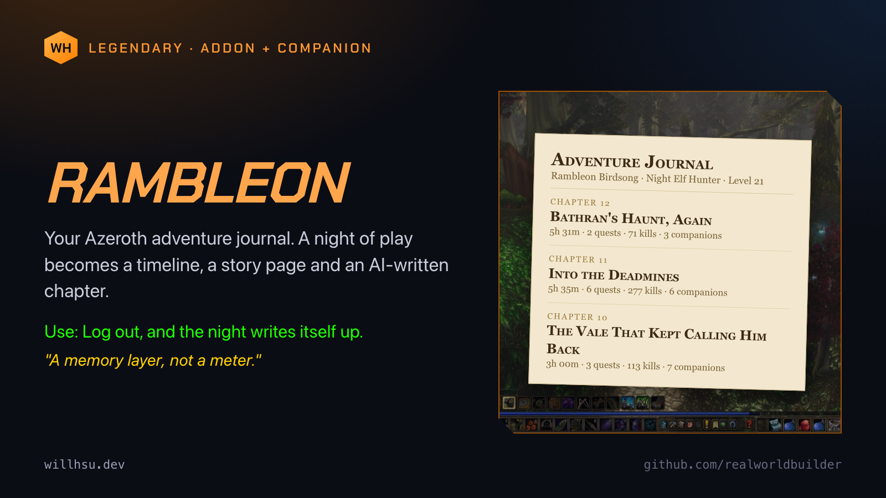
Mogshot
Mogshot makes transparent PNG cutouts of your WoW characters.
It renders in the browser from the game files already on your computer. No account, no server. Your game files never leave your machine.
Drop your WoW folder on the page, get a PNG.
https://realworldbuilder.github.io/mogshot/
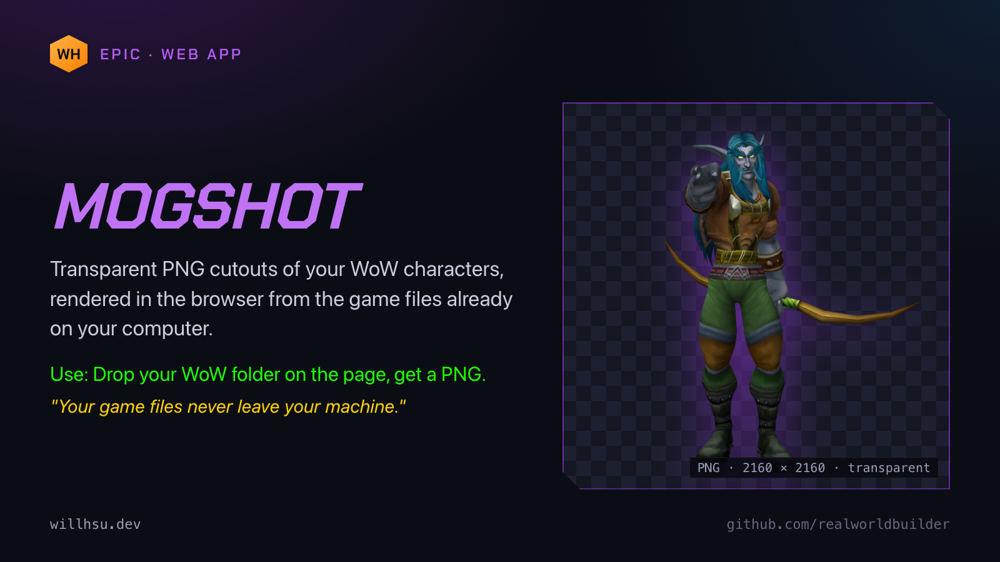
WristAssist
WristAssist: voice notes from your wrist.
Record on Apple Watch or iPhone and the transcription is made entirely on-device with WhisperKit. No cloud, no account.
Tap your wrist, talk, read it back.
Open source, and on the App Store.
https://github.com/realworldbuilder/wristassist
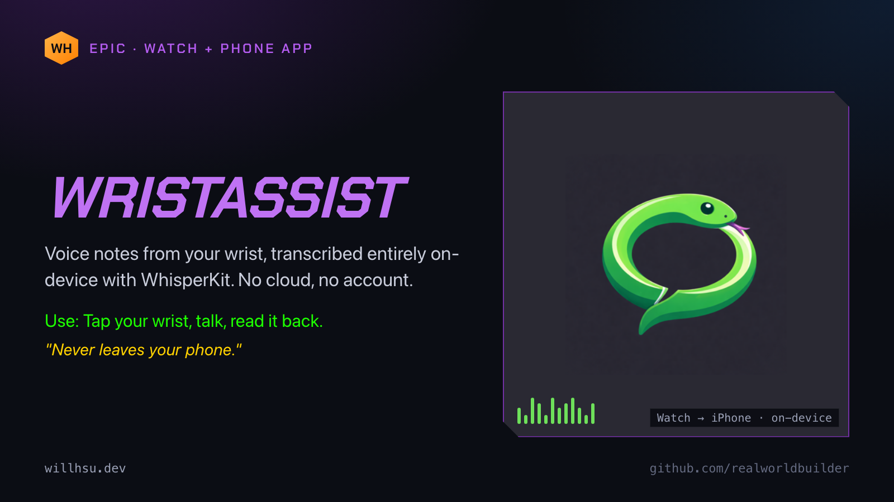
OBS Image Reaction
OBS Image Reaction is an OBS source that shows one image while you are silent and another while you speak, with movement effects and blinking.
Your avatar talks when you do.
Written in C, for OBS Studio on macOS.
https://github.com/realworldbuilder/obs-image-reaction
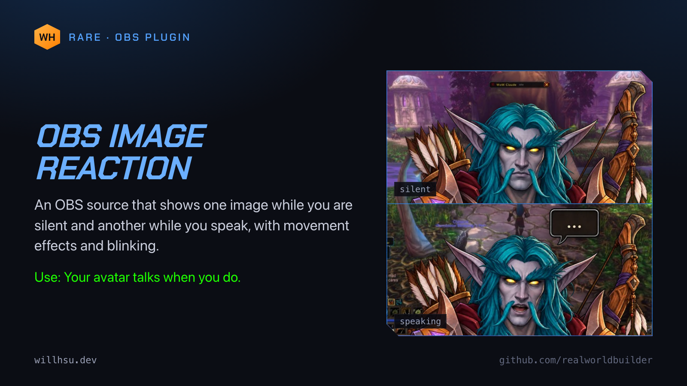
Slipstream
Slipstream is a camera node in a junction box.
A Raspberry Pi 5 and a Logitech C270 serve a 720p30 H.264 feed over RTSP, and OBS picks it up as a media source.
Plug it in, add the feed to OBS.
https://github.com/realworldbuilder/slipstream
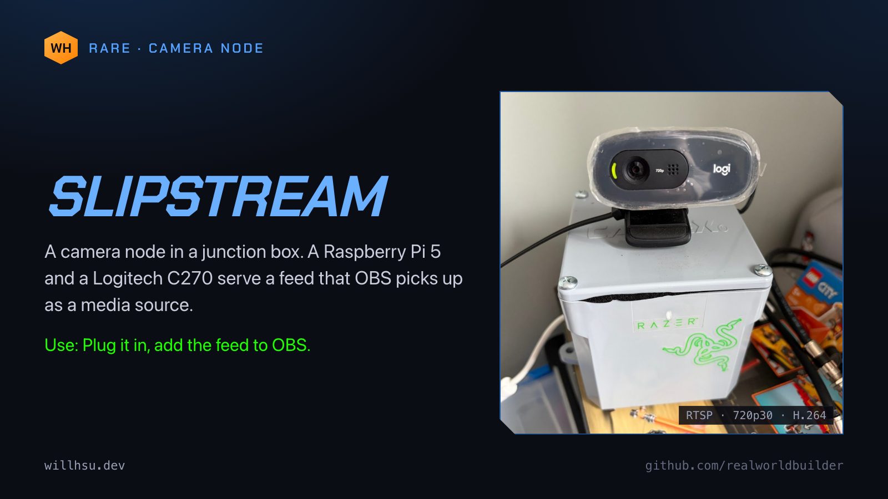
Slightly Improved Screenshot
Slightly Improved Screenshot is a macOS menu bar utility for screenshots and screen recordings at the exact pixel sizes social platforms expect.
Press the hotkey, click, paste at the right size.
https://github.com/realworldbuilder/slightly-improved-screenshot
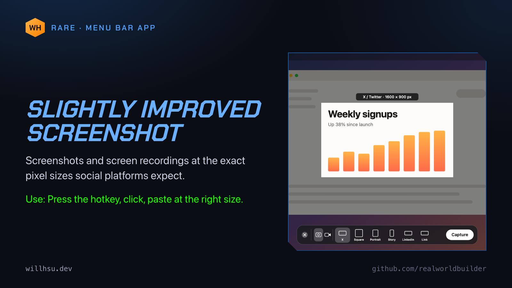
Close the lid
A five-post thread on running Claude Code on a headless Mac mini. The full writeup has the rest.
1/5
You've seen people walking around with their laptop half open so Claude keeps running.
I wanted the opposite: say what I want, shut the laptop and walk off while a Mac mini in the corner does the work.
Here is the setup. 1/5
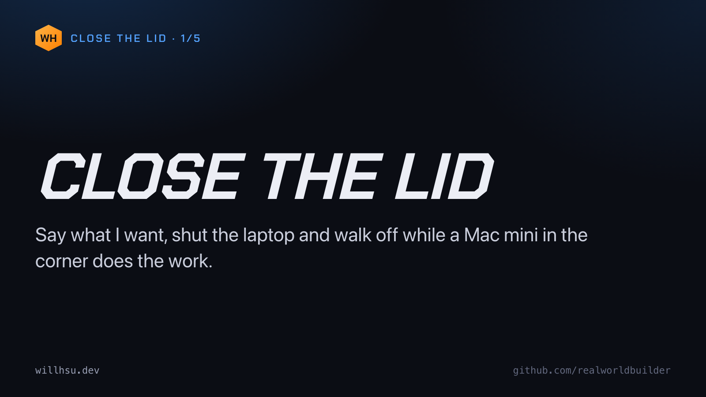
2/5
When Claude Code runs in a terminal on your laptop, the laptop is the computer doing the work. Close the lid and macOS sleeps, and the job stops halfway.
The fix: move the work somewhere that never sleeps and keep only the conversation on the laptop. 2/5
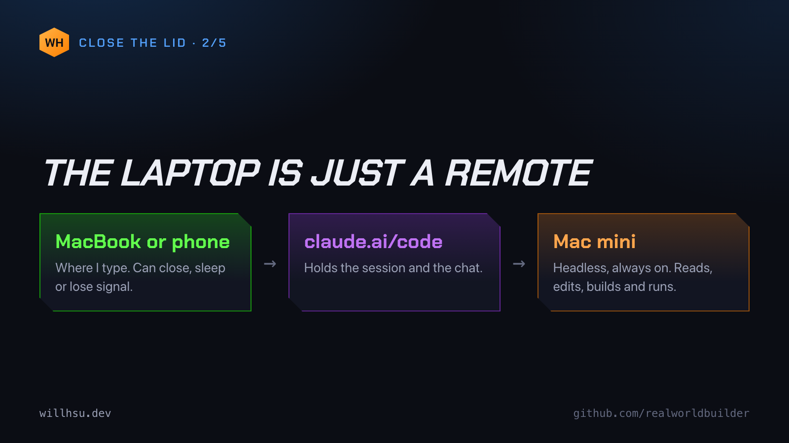
3/5
The mini has no monitor. It runs one long-lived program, claude remote-control, which registers the machine as an environment I can pick from the Claude app.
A LaunchAgent starts it inside a detached tmux session at login, so I can attach and look if something seems off. 3/5
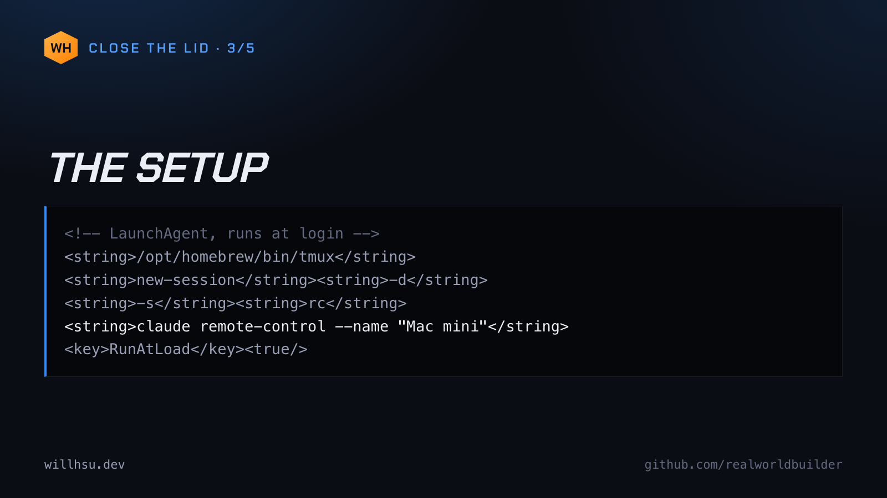
4/5
None of it works if the mini sleeps. So:
sleep 0
disksleep 0
autorestart 1 (boot back up after a power cut)
womp 1 (wake for network access)
Claude Code also holds its own caffeinate lock while it's working. 4/5
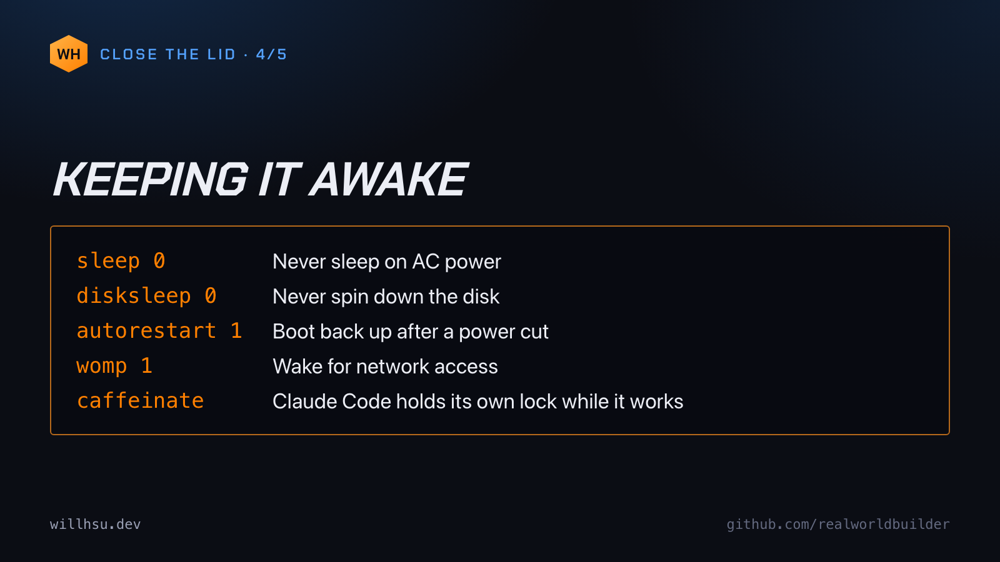
5/5
Rough edges:
Nothing restarts a crashed bridge.
The mini needs its own credentials, because that's where the commands run.
Apps that need a screen need Screen Sharing.
Close the lid. Go outside.
Full writeup: https://willhsu.dev/mini/ 5/5
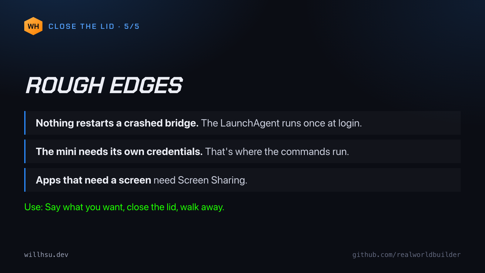
What we're learning
Standalone posts. Each one comes out of a project above.
Local first
A pattern I keep landing on: the tool should run where your data already is.
Mogshot reads the WoW files on your computer, in the browser. WristAssist transcribes on the phone with WhisperKit.
No account, no server, no cloud.
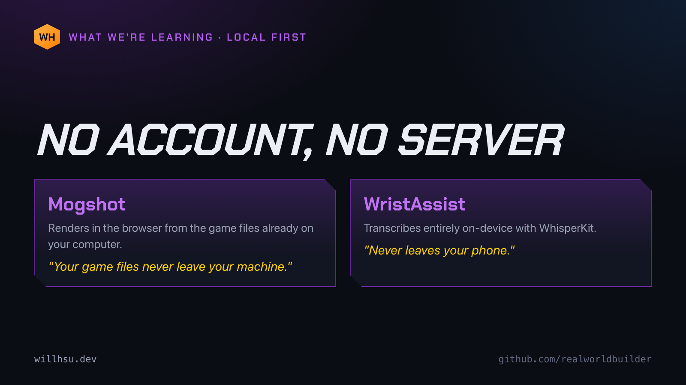
Memory, not metrics
Rambleon doesn't score how well you played. It remembers what happened.
Chapter 11, Into the Deadmines: 5h 35m, 6 quests, 277 kills, 6 companions, written up as a chapter you can read later.
A memory layer, not a meter.
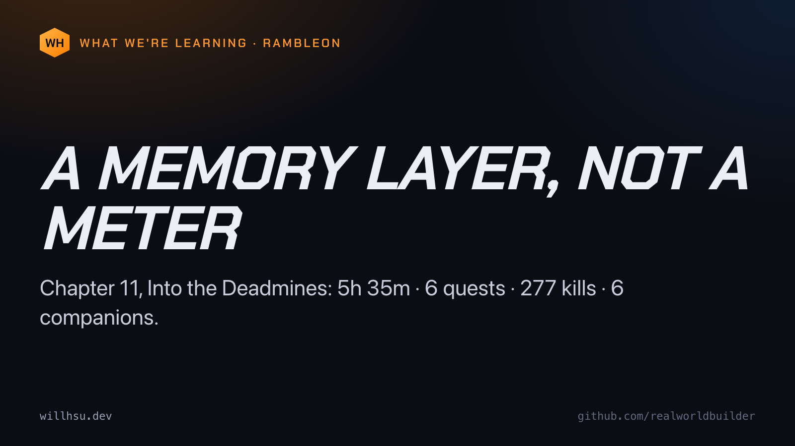
Just a remote
The laptop is just a remote.
That is the whole idea behind how I run Claude Code now. The work and the files stay on a Mac mini that never sleeps. The laptop and the phone only hold the conversation, so either one can close, sleep or lose signal.
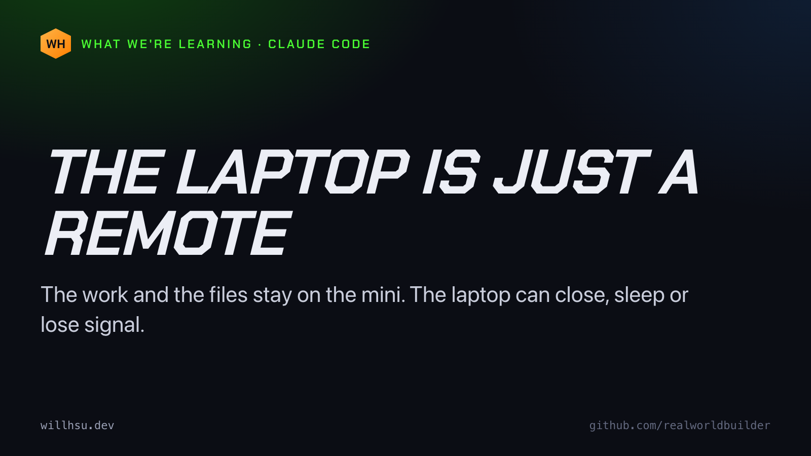
Junction box
A network camera doesn't have to be a product.
Mine is a Raspberry Pi 5 and a Logitech C270 on a PVC junction box, running MediaMTX and ffmpeg. The webcam is wrapped in clear film. OBS adds the feed as a media source like any other.
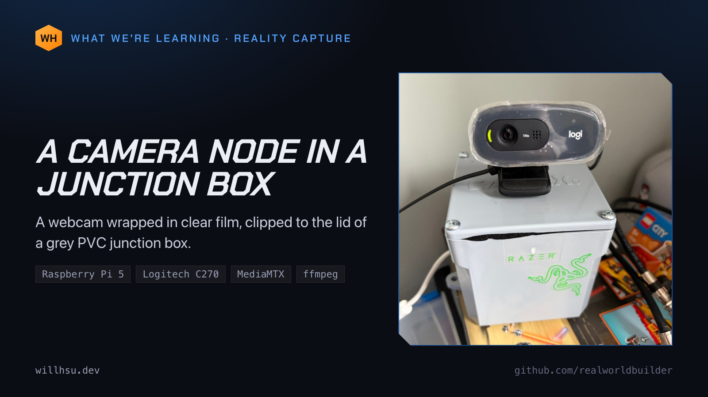
One page a day
I'm reading the official 2004 WoW strategy guide one page a day against WoW Forever.
Claude drafts the posts, every claim tagged verified or unverified. I review, post and play.
83 drafts in four days. What's working and what isn't yet:
https://willhsu.dev/guide/
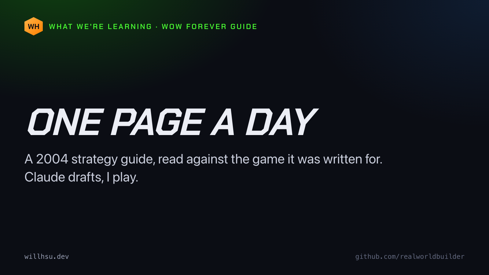
One line each
Every project on my site gets a one-line "Use:", like a WoW item tooltip.
Use: Log out, and the night writes itself up.
Use: Drop your WoW folder on the page, get a PNG.
Use: Tap your wrist, talk, read it back.
Writing that line keeps the tool small.
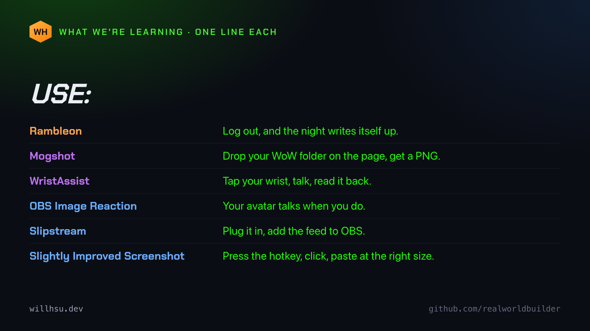